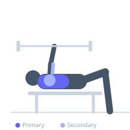

Exercise guide / Wide-Grip Barbell Bench Press
Wide-Grip Barbell Bench Press
The Wide-Grip Bench Press uses a hand placement significantly wider than shoulder-width, reducing the bar travel distance and shortening the range of motion at the elbow. This grip places greater mechanical advantage on the pectorals and shifts some load away from the triceps, making it a useful variation for chest-dominant pressing development.
Primary muscles
pectoralis major sternal
pectoralis major clavicular
Secondary muscles
deltoid anterior
triceps lateral head
Stabilizers
subscapularis
supraspinatus
pectoralis minor
Equipment
Standard Barbell
Flat Bench
Optional
Power Rack (Squat Cage)


Starting position
- Lie on a flat bench under the bar. Grip the bar with hands placed 2-4 inches wider than your standard grip on each side, outside the smooth center knurling.
Setup
- Position on the bench with shoulder blades retracted and depressed. Grip the bar in a full grip (thumb wrapped). Ensure forearms are vertical when the bar touches the chest.
Steps
- Step 1: Unrack and hold the bar at arm's length above the chest.
- Step 2: Lower the bar under control to touch the lower sternum.
- Step 3: Press back to the starting position.
- Step 4: Keep the elbows at approximately 70-80 degrees from the torso — wider grip naturally increases elbow flare.
Coaching cues
- Forearms vertical at the bottom — that is the widest safe grip
- Squeeze the bar like you are trying to break it in half
Breathing
- Inhale and brace before lowering. Exhale at the top.
Range of motion
- Full touch to chest at bottom; full elbow extension at top. ROM is slightly shorter than standard due to wider grip.
Tempo
- 3-1-1-0
Common mistakes
- Gripping excessively wide, which places severe strain on the shoulder joint
- Allowing the wrists to bend backward under load
Safety
- Very wide grip significantly increases shoulder joint stress — do not exceed a grip where forearms are vertical at the bottom
- Shoulder pain is a common complaint; reduce grip width immediately if it occurs
Training
- strength: 3–6 reps
- hypertrophy: 6–12 reps
- strength: 3–5 sets
- hypertrophy: 3–4 sets
- Rest: {'strength': 180, 'hypertrophy': 90}